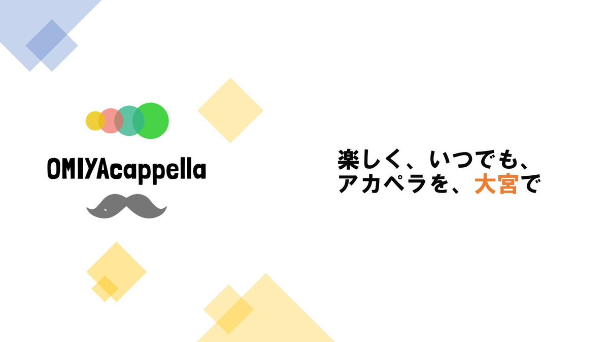
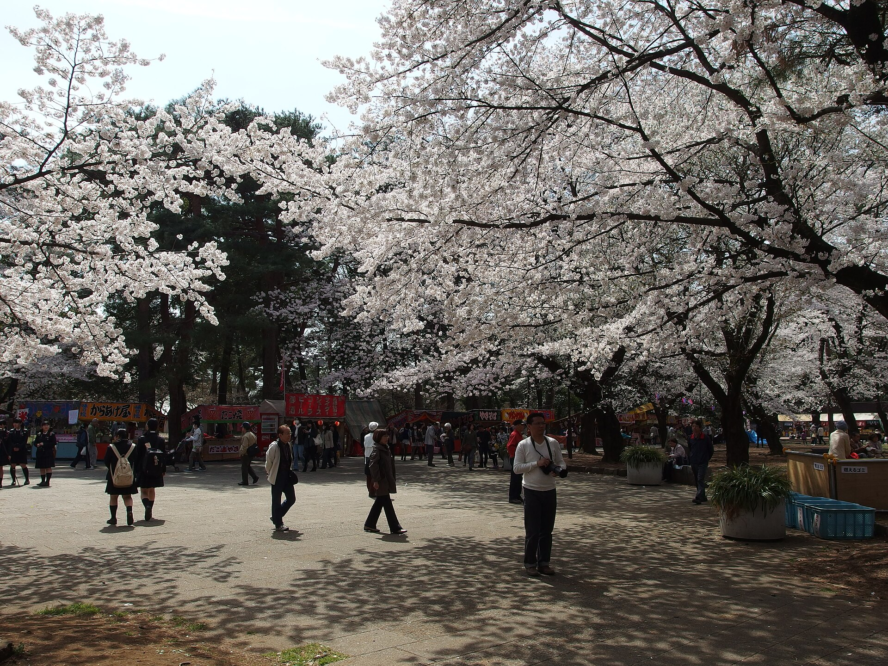

2024.07.27 ／ 固定ポスト
OMIYAcappella🎉🎉 「楽しく、いつでも、アカペラを、大宮で」 アカペラ経験者限定のアカペラプラットフォームです！ 一日or短期の企画バンドを自由につくれる【場】を提供します。 興味のある方はDMまで
Xで見る01 — About
OMIYAcappella は「サークル」ではありません。バンドを固定せず、練習も強制せず、 歌いたい人が歌いたいときに集まるための「場」を提供する、大宮のアカペラプラットフォームです。
アカペラを続けたいけれど、毎週の練習やバンドの固定メンバーに縛られるのはむずかしい。 社会人になって、学生の頃のように気軽に集まれなくなった。 OMIYAcappella は、そんな人のためにつくられました。
やりとりの中心は LINE グループ。 「この曲を歌いたいのですが、誰か集まりませんか？」「◯日にアカペラしませんか？」—— メンバーなら誰でも声をかけられます。集まったらそのまま一日限りの企画バンドが成立。 イベントに出たいときは、それに向けた短期バンドを組むこともできます。
練習場所は大宮のスタジオ・カラオケ・公園に限定。 エリアを敢えて狭めることで、「大宮で集まれる仲間」という輪郭をはっきりさせています。 会費はなく、活動の強制も一切ありません。

大宮公園 — 練習場所は大宮のスタジオ・カラオケ・公園に限定しています。
一日 or 短期の企画バンドのみ。長期の固定バンドをグループ内で組むことは禁止しています。
参加も不参加も自由。歌いたいときに手を挙げればいい、それだけのシンプルな仕組みです。
大宮のスタジオ・カラオケ・公園に限定。集まりやすさと、コミュニティの輪郭を守るためです。
募集も連絡もLINEグループで完結。誰でも自分から企画を立ち上げられます。
02 — Biography
2022年、大宮でアカペラを続けるための小さな「場」として始まりました。 規模は大きくありませんが、その分ひとつひとつの企画を楽しくやっています。
2022.01
「楽しく、いつでも、アカペラを、大宮で」をコンセプトに、 アカペラ経験者限定のLINEグループとして活動をスタート。
2022
企画バンドの立て方、練習場所、キャンセル時の連絡など、 気持ちよく集まるための最低限のルールを明文化しました。
2024.07
「一日 or 短期の企画バンドを自由につくれる【場】を提供する」—— 現在まで固定ポストとして掲げているステートメントを公開。
2026.05
本コミュニティから企画バンド「おおみやの森」が出演。 いきものがかり『帰りたくなったよ』を披露しました。（@ IKSPIARI 2F セレブレーション・プラザ）
2026.06
会費なし・強制的な活動なし・退会自由。 問い合わせの多かった点をXで公開し、参加のハードルを下げました。
2026
今年から都内や埼玉で働き始めた方、異動で関東に来た方も歓迎。 BBQや飲み会などアカペラ以外の交流も定期的に開催しています。
※ 数値は 2026年8月時点。X（@OMIYAacappella）のプロフィールおよび公開ポストに基づいています。
03 — Projects
企画は誰でも立ち上げられます。歌いたい曲があれば、LINEグループに一言投げるところから。 その流れと、参加していただくための条件をまとめました。
「△△を歌いたいのですが誰か集まりませんか？」——LINEグループのメンバーなら誰でも募集をかけられます。
集まったメンバーで、一日 or 短期の企画バンドを結成。音源と楽譜を共有して各自で音取りをします。
大宮のスタジオ・カラオケ・公園に集合。音取りが済んだ状態で臨むのが、たった一つのお約束です。
その日限りで解散してもOK。舞浜アカペラストリートのようなイベントに向けて短期バンドを組むのもOKです。
OMIYAcappella はアカペラ経験者限定のプラットフォームです。 「少しアカペラを齧ったことがあります」という段階の方は、申し訳ありませんがお断りしています。
一切ありません。スタジオ代など、その企画で実際にかかった費用のみ参加者で分担します。
強制的な活動は一切ありませんが、BBQや飲み会は定期的に開催しています。参加は自由です。
自由です。引き止めるといったことは特にありません。またやりたくなったら戻ってきてください。
04 — X / Twitter
最新の企画情報やイベント出演の様子は X（旧Twitter）で発信しています。 参加のご相談はDMでも受け付けています。

2024.07.27 ／ 固定ポスト
OMIYAcappella🎉🎉 「楽しく、いつでも、アカペラを、大宮で」 アカペラ経験者限定のアカペラプラットフォームです！ 一日or短期の企画バンドを自由につくれる【場】を提供します。 興味のある方はDMまで
Xで見る2026.05.08
✨舞浜アカペラストリート✨ ［ 1日目 ］5月9日(土) 14:20- 「おおみやの森」というバンドで本コミュニティより出演いたします！ @ IKSPIARI 2F セレブレーション・プラザ
Xで見る
2026.07.05
今年から都内や埼玉で働くことになった新卒の方や異動された方等、是非一緒にアカペラしませんか？ 本コミュニティの規模自体はそこまで大きくないですが、その分楽しく活動しています！
Xで見る05 — Contact
参加のご希望、ご質問、イベント出演のご相談などはこちらから。 いただいた内容は運営が確認のうえ、順次ご返信します。
Prototype